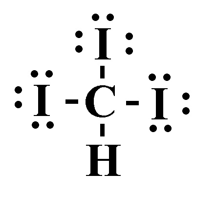

1) What is the main reason why the boiling point of HF is much higher than that of HCl?
A) HF has dipole-dipole forces whereas HCl does not
B) HF has stronger London dispersion forces than HCl
C) HF can hydrogen bond whereas HCl cannot*
D) HCl can hydrogen bond whereas HF cannot
2) Which of the following increases the rate of vaporization?
A) Strong intermolecular bonds
B) Decreasing temperature
C) Increasing temperature*
D) Decreasing the surface area
3) Which substance has the lowest intermolecular forces?
A) Kr
B) Ne*
C) Ar
D) Xe
4) Determine the normal boiling point (at 760 mm Hg) of a substance whose vapor pressure is 59.4 mm Hg at 57.4°C and has a ΔHvap of 35.1 kJ/mol.
A) 331 K
B) 276 K
C) 59.5 K
D) 413 K*
5) Which of the following has the highest viscosity?
A)
B) *
C)
D)
6) Place the following substances in order of decreasing boiling point. H2O N2 CO
A) CO > H2O > N2
B) N2 > CO > H2O
C) H2O > CO > N2*
D) CO > N2 > H2O
7) What is the strongest type of intermolecular force present in a solution of NaCl & water?
A) Dipole-dipole forces
B) Ion-dipole forces*
C) Hydrogen bonding
D) London dispersion forces
E) None of the above.
8) Which of the following statements is TRUE?
A) London dispersion forces are generally stronger than dipole-dipole forces
B) Forming new bonds requires energy
C) Two bonded oxygen atoms are at a lower potential energy than two individual oxygen atoms*
D) Decreasing the temperature of a liquid generally causes it to become a gas
9) Place the following substances in order of increasing vapor pressure at a given temperature. SF6 SiH4 SF4
A) SiH4 < SF4 < SF6
B) SF6 < SiH4 < SF4
C) SF4 < SF6 < SiH4*
D) SF6 < SF4 < SiH4
10) How much energy is required to heat 33.6 g H2O from a liquid at 79.0°C to a gas at 120°C? ΔHvap = 40.7 kJ/mol Cliquid = 4.184 \( \frac{J}{g°C} \) Cgas = 2.01 \( \frac{J}{g°C} \) Csolid = 2.09 \( \frac{J}{g°C} \) Tmelting = 0°C Tboiling = 100°C
A) 95.1 kJ
B) 1370 kJ
C) 4380 kJ
D) 80.2 kJ*
11) Using the phase diagram below, what phase transition would occur if H2O was cooled from 42°C to -62°C at 0.005 atm?
A) Deposition*
B) Condensation
C) Freezing
D) Sublimation
12) How much energy is required to vaporize 42.3 g of benzene (C6H6) at its boiling point, if its ΔHvap is 30.72 kJ/mol?
A) 16.6 kJ/mol*
B) 108 kJ/mol
C) 1300 (3 sf) (3 sf) kJ/mol
D) 0.542 kJ/mol
13) Identify the place which has the highest boiling point of water.
A) Death Valley, 282 feet below sea level*
B) New Orleans, sea level
C) Mt. Everest, 29,035 feet
D) Denver, Colorado, 5280 feet
14) Choose the substance with the highest ΔHvap.
A) SiS2
B) H2O
C) MgCl*
D) H2S
15) (SLO 1.5) List the compounds below in decreasing boiling point order. CH3CH2CH2CH2CH3 Ne CH3CH2CH2CHO
A) Ne > CH3CH2CH2CHO > CH3CH2CH2CH2CH3
B) CH3CH2CH2CHO > CH3CH2CH2CH2CH3 > Ne*
C) CH3CH2CH2CH2CH3 > CH3CH2CH2CHO > Ne
D) CH3CH2CH2CH2CH3 > Ne > CH3CH2CH2CHO
16) (SLO 1.2) In liquid butanol CH3CH2CH2CH2OH, which intermolecular forces are present?
A) Only hydrogen bonding forces are present
B) Only dipole-dipole and ion-dipole forces are present
C) Only dispersion and dipole-dipole forces are present
D) Dispersion, hydrogen bonding, and dipole-dipole forces are present*
17) What is the major intermolecular force between CH4 and CH2CH2?
A) London dispersion forces*
B) Ion-dipole forces
C) Hydrogen bonding
D) Dipole-dipole forces
18) Which of the following compounds will be most soluble in methanol (CH3OH)?
A) Ethandiol *
B) Hexane
C) Acetone
D) Trimethylamine
E) None of the above.
19) Determine the Henry's law constant for an unknown gas in water at 25°C if the unknown gas at a pressure of 0.0117 atm produces a solution with a concentration of 4.86 M.
A) 1.42 M/atm
B) 0.00241 M/atm
C) 0.0569 M/atm
D) 415 M/atm*
20) A sealed container contains 0.385 L of water with an atmosphere of oxygen gas. What is the concentration of O2 in the water if the external pressure is 3.72 atm given that kH for O2 is 1.66 × 10-6 M/mm Hg at this temperature?
A) 0.00469 M*
B) 2950 M
C) 6.18x10-6 M
D) 8.13x10-9 M
21) What mass (in g) of NH3 (17.03 g/mol) must be dissolved in 450. g of methanol (32.04 g/mol) to make a 0.260 m solution?
A) 0.117 g
B) 3.75 g
C) 1.99 g*
D) 0.0622 g
22) Determine the vapor pressure of a solution at 25°C that contains 78.2 g of glucose (C6H12O6) (180.2 g/mol) in 400 mL of water (18.02 g/mol). The vapor pressure of pure water at 25°C is 23.8 torr, and the density of water is 1.00 g/mL.
A) 23.3 torr*
B) 0.456 torr
C) 1220 torr
D) 0.465 torr
23) Which of the following would result in an endothermic reaction?
A) The reactants are at a higher potential energy than the products
B) The reactants have weaker bonds than the products
C) The reactants have stronger bonds than the products*
D) The products and reactants have equal strength bonds
24) Which of the following have a great impact on the solubility of a gas in a liquid?
A) Pressure only
B) Temperature and pressure*
C) Temperature only
D) None of the above.
25) A 2.66 L sample of a water solution contains 0.174 g of sodium ions. Determine the concentration of sodium ions in ppm if the density of the solution is 1.02 g/mL.
A) 71.3 ppm
B) 0.0000641 ppm
C) 6.41x104 ppm
D) 64.1 ppm*
26) How many moles of NaI are contained in 305 g of water in a 0.142 m NaI solution?
A) 0.0433 mol*
B) 6.49 mol
C) 43.3 mol
D) 0.451 mol
27) Calculate the mass of oxygen (in mg) dissolved in a 3.00 L bucket of water exposed to a pressure of 1.19 atm of air. Assume the mole fraction of O2 in air to be 0.21 given that kH for O2 is 1.3 × 10-3 M/atm at this temperature.
A) 31.2 mg*
B) 0.0312 mg
C) 15.6 mg
D) 149 mg
28) What is the mol fraction of ethanol, C2H5OH (46.07 g/mol), in a solution of 77.9 g of ethanol and 300 g of water (18.02 g/mol)?
A) 0.0922*
B) 0.102
C) 0.908
D) 9.85
29) (SLO 1.6) What is the change in boiling point of a solution of 32.1 g KCl (74.55 g/mol) in 765 g of water? Kb for water is 0.512°C/m. Assume ideal behavior.
A) 0.576°C*
B) 0.288°C
C) 0.000288°C
D) 21.5°C
30) (SLO 1.1) The osmotic pressure of a solution formed by dissolving 32.1 mg of Aspirin (C9H8O4) (180.16 g/mol) in enough water to make 0.368 L of solution at 40°C is _____ atm.
A) 0.0124*
B) 12.4
C) 0.00159
D) 0.00458
31) (SLO 1.3) The Henry’s law constant for carbon dioxide gas in water at 20ºC is 392 x 10-4 M/atm. When the partial pressure of helium above a sample of water is 0.425 atm, the concentration of helium in the water is ______ M.
A) 0.0167*
B) 167
C) 0.0922
D) 10.8
32) (SLO 1.4) A solution is 0.551 m LiF (25.94 g/mol). What is the molarity of the solution if the density of the solution is 1.04 g/mL?
A) 0.543 M
B) 0.565 M*
C) 0.573 M
D) 0.0375 M
33) (SLO 1.7) What is a solution containing less than the equilibrium amount of solute is called?
A) A concentrated solution
B) A saturated solution
C) A supersaturated solution
D) An unsaturated solution*
E) None of the above.
34) Given the following proposed mechanism, what is the rate law for the reaction? A2 + B ➞ A2B (overall reaction)
step 1
A2➞ 2A
fast
step 2
2A + B ➞ A2B
slow
A) Rate = \( K[A_2][B] \)*
B) Rate = \( K[A_2]^2[B] \)
C) Rate = \( \frac{K[A_2]^2[B]}{2} \)
D) Rate = \( K[A_2]^{1/2}[B] \)
35) Given the initial rate data below, what is the rate law for the following reaction? A (g) + B (g) ➞ C (g)
Trial
[A]
[B]
rate (M/s)
1
1.0
1.0
1.91x10-8
2
1.0
2.0
1.53x10-7
3
2.0
1.0
7.64x10-8
A) rate =K[A]2[B]3*
B) rate =K[A]3[B]2
C) rate =K[A]4[B]9
D) rate =K[A][B]
36) What is the order of the reaction represented by the graph below?
A) zeroth*
B) second
C) first
D) third
37) A reaction is found to have an activation energy of 44.3 kJ/mol, and a frequency factor (A) of 7.27x1010 s-1. What is the rate constant of the reaction at 204 K?
A) 0.330*
B) 1.60x1022
C) 7.08x1010
D) 0.264
38) The following reaction is a zero order reaction. If the rate constant is 1.08 M/s, and the original concentration of A is 2.41x10-2 M, then what is the half-life?
A (g) + 2 B (g)➞ AB2 (g)
A) 38.4 s
B) 0.0112 s*
C) 0.642 s
D) 44.8 s
39) Using the balanced chemical equation below, calculate the rate of rate reaction with a rate in change of concentration of P equal to -20.0 M/s.
4 P + 5 O2 ➞ 2 P2O5
A) 5.00 M/s*
B) 1.60x105 M/s
C) 80.0 M/s
D) 20.0 M/s
40) Identify the statement that is true.
A) A catalyst has no affect on the rate of a reaction
B) Adding a catalyst increases the rate constant*
C) Catalysts only affect the activation energy and not the rate constant
D) The rate constant is unaffected by temperature changes
41) Calculate the ΔG°rxn at 25°C using the following information. 2 HNO3 (aq) + NO (g) → 3 NO2 (g) + H2O (l), ΔG°rxn = ?
ΔH°f (kJ/mol)
S°(J/mol∙K)
HNO3 (aq)
-207.0
146.0
NO (g)
91.3
210.8
NO2 (g)
33.2
240.1
H2O (l)
-285.8
70.0
A) -56.6 kJ
B) -8.56x104 kJ
C) 129 kJ
D) 50.8 kJ*
42) Consider a reaction that has a positive ΔH and a positive ΔS. Which of the following statements is TRUE.
A) The reaction will be spontaneous at high temperatures*
B) The reaction will be spontaneous at low temperatures
C) The reaction will be spontaneous at all temperatures
D) The reaction will be nonspontaneous at all temperatures
43) Calculate the ΔS°rxn at 25°C using the following information. C6H12O6 (s) + 6 O2 (g) → 6 CO2 (g) + 6 H2O (l), ΔS°rxn = ?
S°(J/mol∙K)
C6H12O6 (s)
212.1
O2 (aq)
205.2
CO2 (g)
213.8
H2O (l)
70.0
A) -133 J/K
B) 580. J/K
C) 3150 J/K
D) 260. J/K*
44) Assuming little to no change in ΔH due to temperature, above what temperature does the following reaction become nonspontaneous? A + B → C, ΔH = -14.8 kJ; ΔS = -13.7 J/K
A) 0.926 K
B) 0.000926 K
C) 1.08 K
D) 1080 K*
45) Given the change in Gibbs free energy for these equations, (1) C (s, graphite) + H2O (g) → CO (g) + H2 (g), ΔG = 91.4 kJ (2) CO (g) + H2O (g) → CO2 (g) + H2 (g), ΔG = -28.6 kJ (3) CH4 (g) + H2O (g) → CO (g) + 3 H2 (g), ΔG = 141.9 kJ
solve for the change in Gibbs free energy for the following equation. 2 C (s) + 2 H2O (g) → CO2 (g) + CH4 (g), ΔG = ?
A) 205 kJ
B) 12.3 kJ*
C) 296 kJ
D) -79.1 kJ
46) (SLO 5.3) Does the following reaction show an increase, decrease, or no change in entropy of the system?
CH3OH (l) ➞ CO (g) + 2 H2(g)
A) Increase*
B) Decrease
C) No change in entropy
47) (SLO 5.7) Which answer correctly identifies the sign on change in enthalpy and entropy? H2O (g) ➞ H2O (l)
A) A positive ΔH and a negative ΔS
B) A positive ΔH and a positive ΔS
C) A negative ΔH and a negative ΔS*
D) A negative ΔH and a positive ΔS
E) All of the above.
48) (SLO 5.2) Given the following equation Given the following equation, 4 NH3 (g) + 3 O2 (g) ➞ 2 N2 (g) + 6 H2O (g), ΔG°rxn = -1267kJ Calculate the ΔG°rxn for the following reaction. 20. NH3 (g) + 15 O2 (g) ➞ 10. N2 (g) + 30. H2O (g)
A) -1267kJ
B) 6335 kJ
C) -6335 kJ*
D) -253.4 kJ
E) None of the above.
49) (SLO 5.4) Which law of thermodynamics states that energy is neither created or destroyed in a chemical process?
A) Zero
B) First*
C) Second
D) Third
E) None of the above.
50) (SLO 5.1) Consider the following reaction at constant pressure. Use the information here to determine the value of ΔSsurr (enthalpy change in the surrounding) at 370. K. Predict whether or not this reaction will be spontaneous at this temperature.
2 N2O (g) ➞ 2 N2 (g) + O2 (g), ΔH = -164.2 kJ
A) ΔSsurr = -444 J/K, reaction is spontaneous*
B) ΔSsurr = -1.64x105 J/K, reaction is spontaneous
C) ΔSsurr = -444 J/K, reaction is nonspontaneous
D) ΔSsurr = -164 J/K, reaction is nonspontaneous
51) (SLO 5.5) For a given compound, list the increasing order of entropy for a liquid, solid and gas.
A) Gas < solid < liquid
B) Solid < liquid < gas*
C) Solid < gas < liquid
D) Gas < liquid < solid
E) None of the above.
52) (SLO 5.3) Which one of the following reactions would have a negative value for ΔS?


 *
*